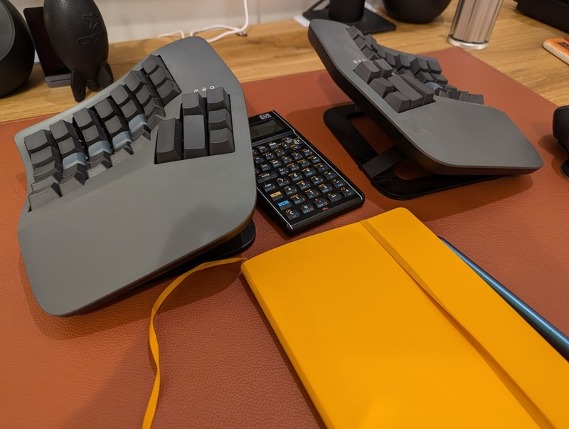
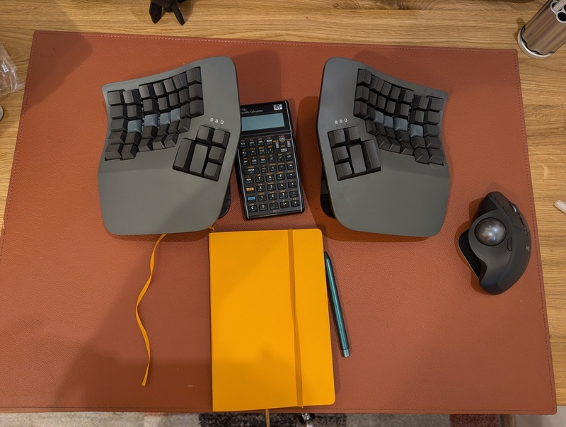
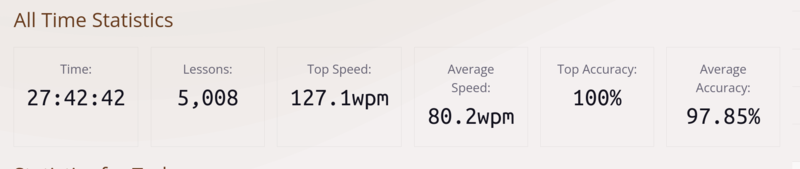
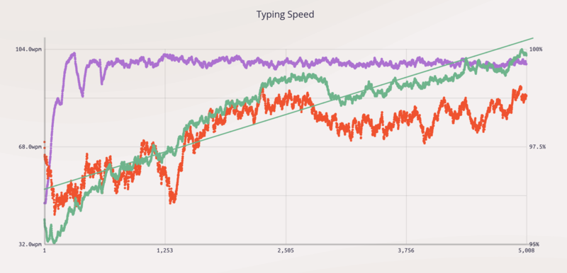
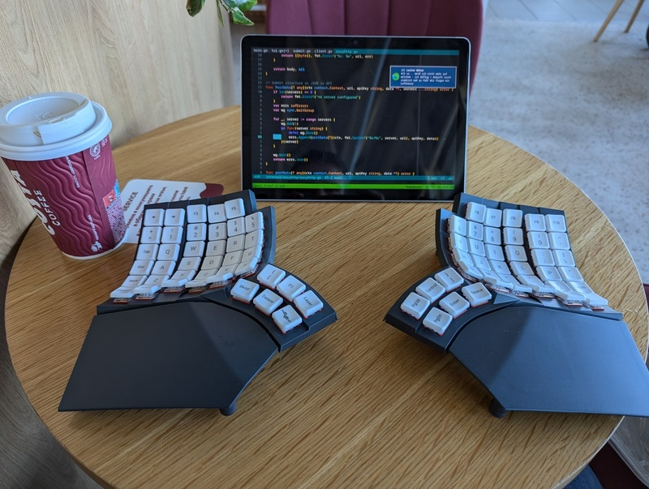

Typing 127.1 words per minute (>100wpm average)
Published at 2024-08-05T17:39:30+03:00
,---,---,---,---,---,---,---,---,---,---,---,---,---,-------,
|1/2| 1 | 2 | 3 | 4 | 5 | 6 | 7 | 8 | 9 | 0 | + | ' | <- |
|---'-,-'-,-'-,-'-,-'-,-'-,-'-,-'-,-'-,-'-,-'-,-'-,-'-,-----|
| ->| | Q | W | E | R | T | Y | U | I | O | P | ] | ^ | |
|-----',--',--',--',--',--',--',--',--',--',--',--',--'| |
| Caps | A | S | D | F | G | H | J | K | L | \ | [ | * | |
|----,-'-,-'-,-'-,-'-,-'-,-'-,-'-,-'-,-'-,-'-,-'-,-'---'----|
| | < | Z | X | C | V | B | N | M | , | . | - | |
|----'-,-',--'--,'---'---'---'---'---'---'-,-'---',--,------|
| ctrl | | alt | |altgr | | ctrl |
'------' '-----'--------------------------'------' '------'
Nieminen Mika
Table of Contents
Introduction
After work one day, I noticed some discomfort in my right wrist. Upon research, it appeared to be a mild case of Repetitive Strain Injury (RSI). Initially, I thought that this would go away after a while, but after a week it became even worse. This led me to consider potential causes such as poor posture or keyboard use habits. As an enthusiast of keyboards, I experimented with ergonomic concave ortholinear split keyboards. Wait, what?...
- Concave: Some fingers are longer than others. A concave keyboard makes it so that the keycaps meant to be pressed by the longer fingers are further down (e.g., left middle finger for e on a Qwerty layout), and keycaps meant to be pressed by shorter fingers are further up (e.g., right pinky finger for the letter p).
- Ortholinear: The keys are arranged in a straight vertical line, unlike most conventional keyboards. The conventional keyboards still resemble the old typewriters, where the placement of the keys was optimized so that the typewriter would not jam. There is no such requirement anymore.
- Split: The keyboard is split into two halves (left and right), allowing one to place either hand where it is most ergonomic.
After discovering ThePrimagen (I found him long ago, but I never bothered buying the same keyboard he is on) on YouTube and reading/watching a couple of reviews, I thought that as a computer professional, the equipment could be expensive anyway (laptop, adjustable desk, comfortable chair), so why not invest a bit more into the keyboard? I purchased myself the Kinesis Advantage360 Professional keyboard.
Kinesis review
For an in-depth review, have a look at this great article:
Review of the Kinesis Advantage360 Professional keyboard
Top build quality
Overall, the keyboard feels excellent quality and robust. It has got some weight to it. Because of that, it is not ideally suited for travel, though. But I have a different keyboard to solve this (see later in this post). Overall, I love how it is built and how it feels.

Bluetooth connectivity
Despite encountering concerns about Bluetooth connectivity issues with the Kinesis keyboard during my research, I purchased one anyway as I intended to use it only via USB. However, I discovered that the firmware updates available afterwards had addressed these reported Bluetooth issues, and as a result, I did not experience any difficulties with the Bluetooth functionality. This positive outcome allowed me to enjoy using the keyboard also wirelessly.
Gateron Brown key switches
Many voices on the internet seem to dislike the Gateron Brown switches, the only official choice for non-clicky tactile switches in the Kinesis, so I was also a bit concerned. I almost went with Cherry MX Browns for my Kinesis (a custom build from a 3rd party provider that is partnershipping with Kinesis). Still, I decided on Gateron Browns to try different switches than the Cherry MX Browns I already have on my ZSA Moonlander keyboard (another ortho-linear split keyboard, but without a concave keycap layout).
At first, I was disappointed by the Gaterons, as they initially felt a bit meshy compared to the Cherries. Still, over the weeks I grew to prefer them because of their smoothness. Over time, the tactile bumps also became more noticeable (as my perception of them improved). Because of their less pronounced tactile feedback, the Gaterons are less tiring for long typing sessions and better suited for a relaxed typing experience.
So, the Cherry MX feel sharper but are more tiring in the long run, and the Gaterons are easier to write on and the tactile Feedback is slightly less pronounced.
Keycaps
If you ever purchase a Kinesis keyboard, go with the PCB keycaps. They upgrade the typing experience a lot. The only thing you will lose is that the backlighting won't shine through them. But that is a reasonable tradeoff. When do I need backlighting? I am supposed to look at the screen and not the keyboard while typing.
I went with the blank keycaps, by the way.

Keymap editor
There is no official keymap editor. You have to edit a configuration file manually, build the firmware from scratch, and upload the firmware with the new keymap to both keyboard halves. The Professional version of his keyboard, by the way, runs on the ZMK open-source firmware.
Many users find the need for an easy-to-use keymap editor an issue. But this is the Pro model. You can also go with the non-Pro, which runs on non-open-source firmware and has no Bluetooth (it must be operated entirely on USB).
There is a 3rd party solution which is supposed to configure the keymap for the Professional model as bliss, but I have never used it. As a part-time programmer and full-time Site Reliability Engineer, I am okay configuring the keymap in my text editor and building it in a local docker container. This is one of the standard ways of doing it here. You could also use a GitHub pipeline for the firmware build, but I prefer building it locally on my machine. This all seems natural to me, but this may be an issue for "the average Joe" user.
First steps
I didn't measure the usual words per minute (wpm) on my previous keyboard, the ZSA Moonlander, but I guess that it was around 40-50wpm. Once the Kinesis arrived, I started practising. The experience was quite different due to the concave keycaps, so I barely managed 10wpm on the first day.
I quickly noticed that I could not continue using the freestyle 6-finger typing system I was used to on my Moonlander or any previous keyboards I worked with. I learned ten-finger touch typing from scratch to be more efficient with the Kinesis keyboard. The keyboard forces you to embrace touch typing.
Sometimes, there were brain farts, and I couldn't type at all. The trick was not to freak out about it, but to move on. If your average goes down a bit for a day, it doesn't matter; the long-term trend over several days and weeks matters, not the one-off wpm high score.
Although my wrist pain seemed to go away aftre the first week of using the Kinesis, my fingers became tired of adjusting to the new way of typing. My hands were stiff, as if I had been training for the Olympics. Only after three weeks did I start to feel comfortable with it. If it weren't for the comments I read online, I would have sent it back after week 2.
I also had a problem with the left pinky finger, where I could not comfortably reach the p key. This involved moving the whole hand. An easy fix was to swap p with ; on the keyboard layout.
Considering alternate layouts
As I was going to learn 10-finger touch typing from scratch, I also played with the thought of switching from the Qwerty to the Dvorak or Colemak keymap, but after reading some comments on the internet, I decided against it:
- These layouts (Dvorak and Colemak) will minimize the finger travel for the most commonly used English words, but they necessarily don't give you a better wpm score.
- One comment on Redit also mentioned that getting stiffer fingers with these layouts is more likely than with Qwerty, as in Qwerty, he had to stretch out his fingers more often, which helps here.
- There are also many applications and websites with keyboard shortcuts and are Qwerty-optimized.
- You won't be able to use someone else's computer as there will be likely Qwerty. Some report that after using an alternative layout for a while, they forget how to use Qwerty.
Training how to type
One of the most influential tools in my touch typing journey has been keybr.com. This site/app helped me learn 10-finger touch typing, and I practice daily for 30 minutes (in the first two weeks, up to an hour every day). The key is persistence and focus on technique rather than speed; the latter naturally improves with regular practice. Precision matters, too, so I always correct my errors using the backspace key.
https://keybr.com
I also used a command-line tool called tt, which is written in Go. It has a feature that I found very helpful: the ability to practice typing by piping custom text into it. Additionally, I appreciated its customization options, such as choosing a colour theme and specifying how statistics are displayed.
https://github.com/lemnos/tt
I wrote myself a small Ruby script that would randomly select a paragraph from one of my eBooks or book notes and pipe it to tt. This helped me remember some of the books I read and also practice touch typing.
Overall, I trained for around 4 months in more than 5,000 sessions. My top speed in a session was 127.1wpm (up from barely 10wpm at the beginning).

My overall average speed over those 5,000 sessions was 80wpm. The average speed over the last week was over 100wpm. The green line represents the wpm average (increasing trend), the purple line represents the number of keys in the practices (not much movement there, as all keys are unlocked), and the red line represents the average typing accuracy.

Around the middle, you see a break-in of the wpm average value. This was where I swapped the p and ; keys, but after some retraining, I came back to the previous level and beyond.
Tips and tricks
These are some tips and tricks I learned along the way to improve my typing speed:
Relax
It's easy to get cramped when trying to hit this new wpm mark, but this is just holding you back. Relax and type at a natural pace. Now I also understand why my Katate Sensei back in London kept screaming "RELAAAX" at me during practice.... It didn't help much back then, though, as it is difficult to relax while someone screams at you!
Focus on accuracy first
This goes with the previous point. Instead of trying to speed through sessions as quickly as possible, slow down and try to type the words correctly—so don't rush it. If you aren't fast yet, the reason is that your brain hasn't trained enough. It will come over time, and you will be faster.
Chording
A trick to getting faster is to type by word and pause between each word so you learn the words by chords. From 80wpm and beyond, this makes a real difference.
Punctuation and Capitalization
I included 10% punctuation and 20% capital letters in my keybr.com practice sessions to simulate real typing conditions, which improved my overall working efficiency. I guess I would have gone to 120wpm in average if I didn't include this options...
Reverse shifting
Reverse shifting aka left-right shifting is to...
- ...use the left shift key for letters on the right keyboard side.
- ...use the right shift key for letters on the left keyboard side.
This makes using the shift key a blaze.
Enter the flow state
Listening to music helps me enter a flow state during practice sessions, which makes typing training a bit addictive (which is good, or isn't it?).
Repeat every word
There's a setting on keybr.com that makes it so that every word is always repeated, having you type every word twice in a row. I liked this feature very much, and I think it also helped to improve my practice.
Don't use the same finger for two consecutive keystrokes
Apparently, if you want to type fast, avoid using the same finger for two consecutive keystrokes. This means you don't always need to use the same finger for the same keys.
However, there are no hard and fast rules. Thus, everyone develops their system for typing word combinations. An exception would be if you are typing the very same letter in a row (e.g., t in letter)—here, you are using the same finger for both ts.
Warm-up
You can't reach your average typing speed first ting the morning. It would help if you warmed up before the exercise or practice later during the day. Also, some days are good, others not so, e.g., after a bad night's sleep. What matters is the mid- and long-term trend, not the fluctuations here, though.
Travel keyboard
As mentioned, the Kinesis is a great keyboard, but it is not meant for travel.
I guess keyboards will always be my expensive hobby, so I also purchased another ergonomic, ortho-linear, concave split keyboard, the Glove80 (with the Red Pro low-profile switches). This keyboard is much lighter and, in my opinion, much better suited for travel than the Kinesis. It also comes with a great travel case.
Here is a photo of me using it with my Surface Go 2 (it runs Linux, by the way) while waiting for the baggage drop at the airport:

For everyday work, I prefer the tactile Browns on the Kinesis over the Red Pro I have on the Glove80 (normal profile vs. low profile). The Kinesis feels much more premium, whereas the Glove80 is much lighter and easier to store away in a rucksack (the official travel case is a bit bulky, so I wrapped it simply in bubble plastic).
The F-key row is odd at the Glove80. I would have preferred more keys on the sides like the Kinesis, and I use them for [] {} (), which is pretty handy there. However, I like the thumb cluster of the Glove80 more than the one on the Kinesis.
The good thing is that I can switch between both keyboards instantly without retraining my typing memories. I've configured (as much as possible) the same keymaps on both my Kinesis and Glove80, making it easy to switch between them at any occasion.
Interested in the Glove80? I suggest also reading this review:
Review of the Glove80 keyboard
Upcoming custom Kinesis build
As I mentioned, keyboards will remain an expensive hobby of mine. I don't regret anything here, though. After all, I use keyboards at my day job. I've ordered a Kinesis custom build with the Gateron Kangaroo switches, and I'm excited to see how that compares to my current setup. I'm still deciding whether to keep my Gateron Brown-equipped Kinesis as a secondary keyboard or possibly leave it at my in-laws for use when visiting or to sell it.
Conclusion
When I traveled with the Glove80 for work to the London office, a colleague stared at my keyboard and made jokes that it might be broken (split into two halves). But other than that...
Ten-finger touch typing has improved my efficiency and has become a rewarding discipline. Whether it's the keyboards I use, the tools I practice with, or the techniques I've adopted, each step has been a learning experience. I hope sharing my journey provides valuable insights and inspiration for anyone looking to improve their touch typing skills.
I also accidentally started using a 10-finger-like system (maybe still 6 fingers, but better than before) on my regular laptop keyboard. I could be more efficient on the laptop keyboard. The form is different there (not ortholinear, not concave keycaps, etc.), but my typing has improved there too (even if it is only by a little bit).
I don't want to return to a non-concave keyboard as my default. I will use other keyboards still once in a while but only for short periods or when I have to (e.g. travelling with my Laptop and when there is no space to put an external keyboard)
Learning to touch type has been an eye-opening experience for me, not just for work but also for personal projects. Now, writing documentation is so much fun; who could believe that? Furthermore, working with Slack (communicating with colleagues) is more fun now as well.
E-Mail your comments to paul@nospam.buetow.org :-)
Back to the main site